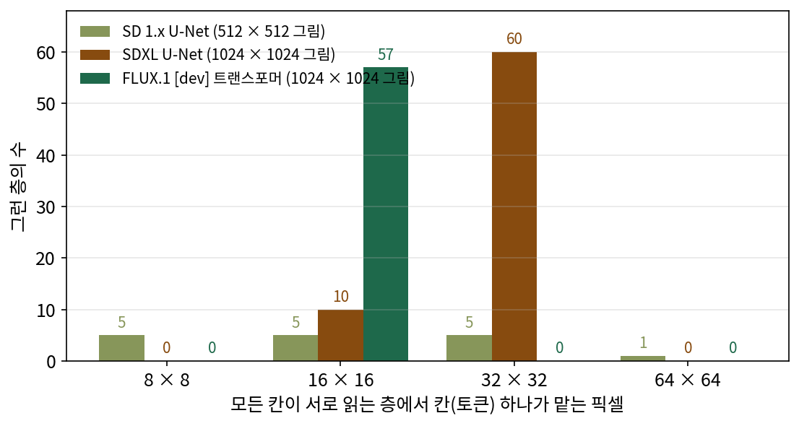

디퓨전 트랜스포머: U-Net 자리에 트랜스포머를
이 장의 물음
잠재 공간으로 줄여도 칸은 많다. 1024 × 1024 그림의 잠재는 128 × 128칸이다. SDXL 의 U-Net 은 그래서 멀리 읽는 어텐션을 해상도를 낮춘 단계에만 두고, 가장 고운 128 × 128칸 단계에서는 합성곱으로 이웃만 보았다. 그래도 멀리 보는 일의 무게는 어텐션 쪽으로 옮겨 가고 있었다. Stable Diffusion 1.x 의 잡음 예측 U-Net 은 매개변수 8억 6,000만 개 가운데 31.1%가 이미 어텐션 블록이었다. 2024년 이후 공개된 그림 생성 모델의 코드를 열어 보면 이 흐름이 끝까지 간 것을 본다. FLUX.1, Qwen-Image, Z-Image, krea.ai 의 Krea 2, Anima 의 잡음 예측 신경망에는 합성곱 층이 하나도 없다. 합성곱 단계를 걷어 내고 트랜스포머 블록만 수십 개 쌓았다.
트랜스포머는 토큰 줄을 받는다. 그런데 잠재 그림은 가로세로로 늘어선 칸이고, 칸을 모두 토큰으로 삼으면 서로 읽는 쌍이 감당하기 어렵게 많아진다. 또 U-Net 은 시간 벡터를 채널마다 더했고, 글 조건은 크로스 어텐션으로 읽었다. U-Net 자리에 트랜스포머를 놓으려면 이것들을 하나씩 다시 정해야 한다. 이 장은 다음 물음에 차례로 답한다.
- U-Net 에도 어텐션이 있었는데, 왜 신경망을 통째로 트랜스포머로 바꿨을까? 글, 여러 가로세로 비, 참조 사진, 영상을 받고 모델을 키우려 할 때 U-Net 의 무엇이 걸렸을까?
- 가로세로 칸으로 된 잠재 그림을 트랜스포머가 읽는 토큰 줄로 바꾸려면 어떻게 잘라야 할까? 토큰은 몇 개가 알맞을까?
- 시간(잡음 수준)은 블록의 어디에 어떤 꼴로 넣어야 할까? 넣는 방법에 따라 결과가 얼마나 달라질까?
- 글 토큰 줄은 그림 토큰 줄과 어떻게 만나야 할까? 두 줄을 아예 한 줄로 이을 수는 없을까?
- 이렇게 지은 신경망은 키우면 얼마나 좋아지고, 무엇을 키워야 할까?
- 지금 쓰이는 모델들은 같은 부품을 어떻게 서로 다르게 조립했을까?
- 그 모델들은 모두 VAE 로 줄인 잠재 위에서 잡음이나 속도를 맞힌다. 압축기 없이 픽셀을 큰 조각으로 잘라 넣으면 무엇이 무너지고, 신경망에게 무엇을 맞히게 해야 버틸까?
U-Net 을 떠난 까닭: 모든 것을 한 줄로 읽는 한 가지 통로
U-Net 기반 모델을 오래 써 온 사람들이 꼽는 흠이 있다. 체육관에서 운동하는 사람을 그리게 하면, 사람 뒤로 지나가는 철봉이 왼쪽과 오른쪽에서 높이가 어긋나 한 막대로 이어지지 않는 경향이 있다는 것이다. 수평선, 울타리, 책장의 선반처럼 앞의 물체에 가려 두 조각으로 보이는 것은 모두 같은 처지다. 손가락이 여섯 개로 나오거나 작은 간판 글씨가 엉뚱한 획이 되는 흠은 갈라 두자. 작게 그린 글자와 손가락은 압축기를 한 번 왕복하는 것만으로 무너질 수 있어서, 몸통이 아니라 압축기의 되살리기 천장 몫이다.
그런데 2024년 이후 공개된 모델들이 U-Net 을 버린 까닭은 흠 하나가 아니었다. 그림 생성 모델에게 바라는 일이 늘었다. 긴 글을 정확히 따르기, 아무 가로세로 비로 그리기, 참조 사진을 보고 고치기, 몇 초짜리 영상 만들기, 그리고 모델을 키운 만큼 좋아지기. U-Net 은 이 요구마다 무엇을 덧대야 했고, 트랜스포머는 무엇을 그대로 둔 채 받았을까?
역사: 어텐션을 어디에, 몇 개
2020년의 DDPM 은 잡음 예측 U-Net 의 16 × 16칸 단계 한 곳에만 셀프 어텐션을 두었다. 이듬해 OpenAI 의 다리왈(Prafulla Dhariwal)과 니콜(Alex Nichol)은 U-Net 의 부품을 하나씩 바꿔 보는 비교에서, 어텐션을 16 × 16 한 곳에서 32 × 32, 16 × 16, 8 × 8 세 단계로 늘리자 ImageNet 128 × 128 에서 70만 걸음 뒤의 FID 가 15.33에서 0.72 내려간다고 보고했다. 멀리 읽는 층은 늘수록 좋았다.
다만 어텐션은 칸 수의 제곱만큼 비싸서, 가장 고운 단계에 두기가 부담스러웠다. Stable Diffusion 1.x 는 잠재 64 × 64칸(그림 512 × 512) 단계까지 어텐션을 두었다. 그림을 1024 × 1024 로 키우면 그 단계가 16,384칸이 되어 쌍이 16배로 는다. 2023년 1024 × 1024 그림을 만드는 SDXL 을 내놓은 Stability AI 의 포델(Dustin Podell)과 동료들은 「효율을 위해 가장 높은 단계의 트랜스포머 블록을 뺐다」고 적고, 128 × 128칸 단계에는 어텐션을 두지 않고 그 아래 두 단계에 트랜스포머 층 2개짜리와 10개짜리 블록을 몰았다. ComfyUI 의 설정으로 두 U-Net 을 지어 세어 보면 이렇다(sources/dit/unet_attention_layout.py).
| 모든 칸이 서로 읽는 층 | 그 층의 매개변수 몫 | 칸 하나 = 픽셀 8 × 8 | 16 × 16 | 32 × 32 | 64 × 64 | |
|---|---|---|---|---|---|---|
| SD 1.x (512 × 512) | 16개 | 31.1% | 5 | 5 | 5 | 1 |
| SDXL (1024 × 1024) | 70개 | 86.0% | 0 | 10 | 60 | 0 |
| FLUX.1 [dev] (1024 × 1024) | 57개 | 몸통 전부 | 0 | 57 | 0 | 0 |
(U-Net 의 층 하나는 셀프 어텐션·크로스 어텐션·MLP 한 벌. SDXL 의 128 × 128칸 단계에는 합성곱 잔차 블록 5개만 있다.)
어텐션은 점점 늘었다. 다만 늘어난 곳은 언제나 칸을 크게 묶은 단계였다.
정보가 오가는 길
막대의 오른쪽 조각을 정확한 높이에 그리려면, 왼쪽 조각이 「어느 높이에, 어떤 기울기로」 있는지가 오른쪽 칸의 출력에 닿아야 한다. 이렇게 한 칸의 정보가 멀리 떨어진 칸의 출력에 닿기까지 거치는 층들의 길을 이 책에서는 정보 통로 (멀리 떨어진 칸끼리 정보가 오가는 층들의 길)라 부르자. 수용 영역이 「닿을 수 있는 구역」이라면, 정보 통로는 그 구역 안에서 정보가 실제로 지나가는 길이다.
U-Net 의 정보 통로는 셋이다. 합성곱은 층마다 이웃 칸까지만 닿는다. 멀리 닿는 길은 해상도를 낮춘 단계에 있는데, 거기서 칸 하나는 픽셀 32 × 32 같은 큰 덩어리다. 올라오는 길의 건너뛰기 연결은 높은 해상도의 정확한 자리를 건네주지만, 건네주는 것은 바로 그 자리의 정보다. 그래서 칸 하나 단위로 어디에 칠할지는 마지막에 높은 해상도의 합성곱이 이웃만 보고 정한다. 디퓨전 트랜스포머의 통로는 하나다. 모든 블록에서 모든 토큰이 서로 읽는다. FLUX.1 은 같은 16 × 16 픽셀 굵기에서 57번 읽는다.

한 줄에 이어 붙이기
통로가 하나면 들어오는 것의 꼴도 하나로 정해진다. 좌표가 붙은 토큰의 줄이다. 새 것을 들이는 일은 좌표를 매겨 그 줄에 이어 붙이는 일 하나로 줄어든다.
- 가로세로 비: 그림이 길쭉해지면 줄이 길어지고 좌표의 범위가 바뀔 뿐이다. ComfyUI 의 FLUX 코드는 잠재 그림의 높이와 너비에서 토큰마다 (번호, 행, 열) 좌표를 만든다(
comfy/ldm/flux/model.py의process_img). SD3 논문은 높은 해상도로 이어 학습할 때 가로세로 비가 같은 그림끼리 배치를 묶고, 2차원 위치 좌표의 격자를 늘이고 보간해 「자유로운 가로세로 비로 생성」하게 했다고 적었다. 같은 묶음 학습은 SDXL 의 U-Net 도 썼다. 합성곱은 원래 그림 크기를 가리지 않으니, 가로세로 비만은 U-Net 도 받아 냈다. - 글: 글 인코더가 넘긴 토큰 줄을 그림 토큰 줄 옆에 이어 붙이면 같은 셀프 어텐션이 함께 읽는다. U-Net 에서는 글을 읽는 크로스 어텐션이 트랜스포머 층이 있는 단계에만 있었다. SDXL 의 128 × 128칸 단계는 글을 직접 읽지 않는다.
- 참조 그림: FLUX.1 Kontext 를 ComfyUI 에서 돌리면, 참조 사진의 잠재 그림이 생성할 그림과 같은 함수로 토큰이 되고 번호 1을 받아 줄 뒤에 붙는다. 마지막에는 앞쪽 생성 그림 토큰만 잘라 쓴다. 블록은 FLUX.1 과 같은 꼴이다. U-Net 에서는 참조 그림을 읽히려고 새 크로스 어텐션을, 윤곽 같은 조건 그림을 읽히려고 내려가는 쪽을 복제한 신경망을 곁가지로 덧댔다.
- 영상 프레임: Wan2.1 의 패치는 (시간, 행, 열)로 1 × 2 × 2칸이다(
comfy/ldm/wan/model.py). 프레임은 좌표 축 하나가 더 붙은 토큰이다.
ML에서: 언어모델의 연장을 그대로
꼴이 언어모델과 같으면 연장도 같이 쓴다. ComfyUI 에서 FLUX 의 어텐션과 Qwen·Mistral 같은 언어모델 글 인코더의 어텐션은 같은 어텐션 함수 모음(comfy/ldm/modules/attention.py)에서 계산법을 고른다. FlashAttention, SageAttention, PyTorch 내장 어텐션 같은, 트랜스포머를 빠르게 돌리려고 다듬어 온 것들이다. 수를 8비트로 줄여 곱하는 fp8 행렬 곱은 선형 층에만 걸린다(comfy/ops.py 의 fp8_ops 는 Linear 만 바꾼다). 트랜스포머만으로 잠재 디퓨전의 잡음 예측 신경망을 짠 피블스(William Peebles)와 셰(Saining Xie)도 2022년 논문 머리에서, U-Net 의 귀납 편향이 꼭 필요하지 않다면 디퓨전도 「다른 분야의 모범 사례와 학습 비법을 물려받는」 구조 통일의 흐름에 올라탈 수 있다고 적었다.
키우는 일도 같다. U-Net 을 키우려면 단계 수, 단계마다의 채널, 어텐션을 둘 해상도를 함께 정해야 했다. 블록 하나를 되풀이해 쌓은 몸통이면 폭과 깊이와 토큰 수만 남는다. 계산을 늘린 만큼 그림이 고르게 좋아지는지는 모델을 키우는 이야기에서 숫자로 본다.
문제 1. 담 양쪽의 빨랫줄
높은 담 양쪽에 선 두 사람이 담 위로 빨랫줄 하나를 걸쳐, 양쪽 끝을 같은 높이의 못에 걸려 한다. 담 너머는 보이지 않는다. 방법은 둘이다. (ㄱ) 담 너머로 「내 못은 몇 cm」라고 외친다. 외치는 말은 10cm 단위로 반올림돼서만 들린다. (ㄴ) 담 위 사다리에 선 친구가 양쪽을 한눈에 보고 「왼쪽을 2cm 올려」라고 고쳐 준다. (가) (ㄱ)만 쓰면 두 못의 높이 차는 최대 얼마까지 생길 수 있는가? (나) 사다리 친구를 한 번만 부를 수 있다면, 처음 대충 걸 때와 못을 박기 바로 전 가운데 언제가 좋은가? (다) (ㄱ)을 열 번 외쳐도 (ㄴ) 한 번을 못 따라가는 까닭은?

(가)는 10cm 단위니까 최대 10cm요.

반올림해서 들린다고 했죠. 「80」이라고 들리는 못은 실제로 어디쯤일 수 있죠?

75에서 85 사이요. 듣는 사람이 정확히 80에 박으면 많아야 5cm 차이네요.

(나)는 처음 대충 걸 때야. 처음 방향을 잘 잡아야 나중에 덜 고치잖아.
처음에 맞춰 준 뒤에, 못을 박는 마지막 손질은 누가 하죠? 그 사람은 담 너머를 볼 수 있나요?

아… 마지막엔 각자 자기 쪽만 보고 박네요. 처음에 맞춰 놓아도 마지막 손질에서 어긋나면 고칠 사람이 없어요. 박기 바로 전에 불러야 해요.

(다)는 외침이 몇 번이든 10cm 단위라는 굵기가 그대로라서야. 같은 굵기의 말을 되풀이해도 더 가는 자리는 안 실려.

그래요. 멀리 닿는 길이 몇 개냐, 어느 굵기로 말을 싣느냐, 마지막 손질 가까이에 있느냐. 세 가지가 함께 정해요.

조별 보고서를 각자 나눠 쓰고 첫 회의 때만 목차를 맞추면, 마지막에 합쳤을 때 용어가 서로 안 맞는 거랑 같네요. 제출 직전에 한 사람이 처음부터 끝까지 읽어야 맞아요.
문제 2. SDXL 의 통로를 세면
SDXL 은 1024 × 1024 그림을 잠재 128 × 128칸으로 받아 128 → 64 → 32칸 세 단계를 지난다. 128칸 단계에는 어텐션이 없고 3 × 3 합성곱이 내려가는 길에 4층, 올라오는 길에 6층 있다(잔차 블록 하나에 2층. 처음·마지막 합성곱과 해상도를 바꾸는 합성곱은 뺌). (가) 128칸 단계에서 칸 하나는 픽셀 몇 × 몇인가? 그 단계의 합성곱 10층만으로 정보가 옆으로 갈 수 있는 거리는 이론상 몇 픽셀인가? (나) 사람 몸 폭 300픽셀을 사이에 둔 막대 두 조각을 32칸 단계의 어텐션이 직접 잇는다. 그 단계에서 칸 하나가 맡는 픽셀은? (다) FLUX.1 에서 모든 토큰이 서로 읽는 층은 몇 개이고, 토큰 하나는 픽셀 몇 × 몇인가?
(가)는 1024 ÷ 128 = 8이라 8 × 8픽셀이요. 3 × 3 합성곱 한 층이 양옆으로 한 칸씩 넓히니까 10층이면 10칸, 80픽셀이요. 300픽셀에 한참 모자라요.
(나)는 1024 ÷ 32 = 32라서 32 × 32픽셀. 그럼 막대 높이를 32픽셀 단위로만 아는 거네. 문제 1의 10cm 외침이랑 같아.
32칸 단계의 칸 하나에는 수가 몇 개 들어 있죠? 칸 안 어디쯤에 막대가 있는지를 그 수로 적을 수는 없을까요?
채널이 1,280개니까… 「칸 위에서 11픽셀째」 같은 것도 수로 적을 수 있겠네요. 32픽셀 단위로만 안다는 건 틀렸어요.
그래도 그 수가 그림이 되려면 올라오는 길에서 다시 풀려야 해요. 64칸, 128칸으로 키우면서 마지막에 정확한 칸을 칠하는 건 이웃만 보는 합성곱이고, 옆에서 건너온 특징은 그 자리의 결만 알고요. 적을 수는 있어도 끝까지 잘 실려 가는지는 따로 봐야 해요.
(다)는 두 줄 19개와 한 줄 38개라 57개, 토큰 하나는 2 × 2칸이라 16 × 16픽셀이요. 마지막 층 바로 앞까지 모든 층이 그 굵기로 서로 읽어요.
그래요. 32칸 단계의 어텐션도 정보를 싣기는 해요. 다른 것은 싣는 굵기, 길의 수, 그리고 마지막 손질과의 거리예요.
해석학에서 근사를 거칠게 한 번 하고 나중에 국소적으로만 고치면, 국소 수정으로는 전체 오차를 못 줄이는 거랑 같네요.
문제 3. 선형 층만 빨라지면
ComfyUI 의 fp8 행렬 곱 가속은 선형 층에만 걸린다. ComfyUI 설정으로 두 모델을 지어 한 걸음의 층 계산(곱셈·덧셈 짝, 어텐션 쌍의 계산은 뺌)을 세면, SDXL U-Net(1024 × 1024)은 2조 9,887억 짝 가운데 합성곱이 27.2%, 선형 층이 72.8%이고, FLUX.1 [dev](1024 × 1024, 글 512토큰)은 29조 7,561억 짝이 모두 선형 층이다. 매개변수로 세면 SDXL 의 합성곱 몫은 13.0%다. (가) 선형 층의 계산만 두 배 빨라진다면 두 모델의 층 계산 시간은 각각 처음의 몇 배가 되는가? (나) SDXL 에서 합성곱의 몫이 매개변수로는 13.0%인데 계산으로는 27.2%인 까닭은? 128 × 128칸 단계의 잔차 블록 5개는 매개변수 1,662만 개이고, 그 단계의 합성곱 계산은 2,839억 짝이다. (다) 언어모델 쪽에서 널리 쓰인 양자화 파일 형식 GGUF 를 ComfyUI 에 들여온 개발자는 「보통의 U-Net(합성곱)에는 양자화가 쓸 만하지 않았는데, FLUX 같은 트랜스포머 모델은 양자화의 영향을 덜 받는 것 같다」고 적었다. 언어모델을 위해 만든 연장이 디퓨전 트랜스포머에 잘 맞는 까닭을 몸통의 생김새로 말해 보라.
(가)는 쉬워요. 72.8%가 빨라지니까 SDXL 도 거의 두 배요.
빨라지지 않는 27.2%는 얼마나 걸리죠?
아, 그대로예요. 0.272 + 0.728 ÷ 2 = 0.636배, 1.57배 빨라지는 데서 멈춰요. FLUX.1 은 전부 선형 층이니까 0.5배, 딱 두 배고요.
(나)는 합성곱이 칸마다 같은 커널을 되풀이해서야. 128칸 단계의 잔차 블록은 매개변수가 전체의 0.6%인데, 칸 16,384개마다 계산하니까 그 단계 합성곱만으로 층 계산의 9.5%야.
그럼 매개변수가 몰린 곳은요?
트랜스포머 층 60개가 있는 32칸 단계요. 매개변수는 크지만 칸이 1,024개뿐이라 매개변수 하나가 하는 계산이 적어요. 그래서 매개변수 몫과 계산 몫이 서로 다르게 나와요. 매개변수로만 보면 「거의 다 선형 층이니 가속이 거의 다 먹힌다」고 잘못 셈하겠네요.
(다)는 FLUX 몸통이 언어모델이랑 같은 부품으로만 돼 있어서요. 선형 층과 어텐션뿐이니까 언어모델에 쓰던 연장을 고칠 것 없이 갖다 써요.
그래요. 다만 개발자도 「것 같다」고만 적었어요. 왜 덜 영향을 받는지는 재 보지 않았다는 뜻이죠. 우리가 확인한 것은 부품의 종류가 하나로 줄었다는 사실까지예요.
공구가 규격 나사 하나로 통일된 조립식 가구 같네요. 드라이버 하나로 다 조이니까, 더 좋은 드라이버가 나오면 가구 전체가 한꺼번에 덕을 봐요.